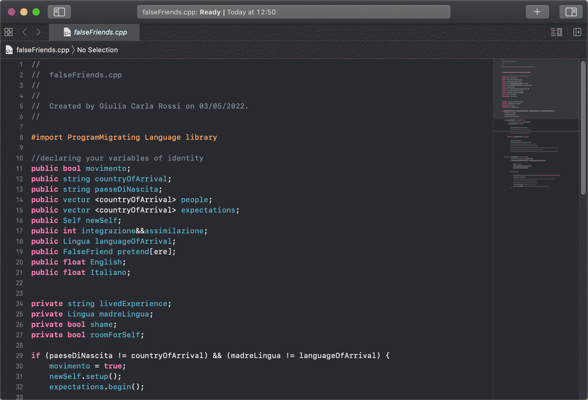

ProgramMigrating Language
The ProgramMigrating Language(pML) is a practice-as-research project that seeks to represent my personal experience of living between languages (Italian and English) through codework. It stems from my research into how codework and programming anti-languages can produce creative outputs that disrupt the computer binary, and express movement, ambiguity and in-betweenness. After studying the work of different artists who wrote their own esolangs and codework as algorithmic representations of complex, intersectional, shifting identities, I focused on the topics of multilingualism and translation to write my own programming anti-language and translate my lived experience into codework.
